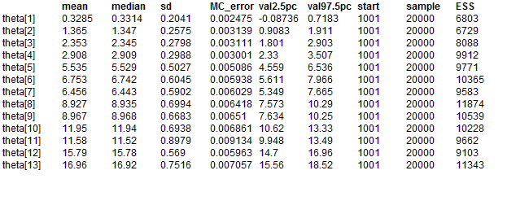

Bones: latent trait model for multiple ordered categorical responses
The concept of skeletal age (SA) arises from the idea that individuals mature at different rates: for any given chronological age (CA), the
average SA in a sample of individuals should equal their CA, but with an inter-individual spread which reflects the differential rate of maturation. Roche et al (1975) have developed a model for predicting SA by calibrating 34 indicators (items) of skeletal maturity which may be observed in a radiograph. Each indicator is categorized with respect to its degree of maturity: 19 are binary items (i.e. 0 = immature or 1 = mature); 8 items have 3 grades (i.e. 0 = immature; 1 = partially mature; 2 = fully mature); 1 item has 4 ordered grades and the remaining 6 items have 5 ordered grades of maturity. Roche
et al. calculated threshold parameters for the boundarys between grades for each indicator. For the binary items, there is a single threshold representing the CA at which 50% of individuals are mature for the indicator. Three-category items have 2 threshold parameters: the first corresponds to the CA at which 50% of individuals are either partially or fully mature for the indicator; the second is the CA at which 50% of individuals are fully mature. Four and five-category items have 3 and 4 threshold parameters respectively, which are interpreted in a similar manner to those for 3-category items. In addition, Roche
et al. calculated a discriminability (slope) parameter for each item which reflects its rate of maturation. Part of this data is shown below. Columns 1--4 represent the threshold parameters (note the use of the missing value code NA to `fill in' the columns for items with fewer than 4 thresholds); column 5 is the discriminability parameter; column 6 gives the number of grades per item.
Thissen (1986) (p.71) presents the following graded radiograph data on 13 boys whose chronological ages range from 6 months to 18 years. (Note that for ease of implementation in
BUGS we have listed the items in a different order to that used by Thissen):
Some items have missing data (represented by the code NA in the table above). This does not present a problem for
BUGS: the missing grades are simply treated as unknown parameters to be estimated along with the other parameters of interest such as the SA for each boy.
Thissen models the above data using the logistic function. For each item
j and each grade
k, the cumulative probability Q
jk that a boy with skeletal age
θ is assigned a more mature grade than
k is given by
logitQ
jk =
δj(
θ -
γjk)
where
δj is the discriminability parameter and the
γjk are the threshold parameters for item
j. Hence the probability of observing an immature grade (i.e. k =1) for a particular skeletal age
θ is p
j,1 = 1 - Q
j,1. The probability of observing a fully mature grade (i.e.k = K
j, where K
j is the number of grades for item
j is p
j,Kj = Q
j,Kj -1. For items with 3 or more categories, the probability of observing an itermediate grade is p
j,k = Q
j,k-1 - Q
j,k (i.e. the difference between the cumulative probability of being assigned grade
k or more, and of being assigned grade
k+1 or more).
The
BUGS language for this model is given below. Note that the
θi for each boy
i is assigned a vague, independent normal prior theta[i] ~ dnorm(0.0, 0.001). That is, each boy is treated as a separate problem with is no `learning' or `borrowing strength' across individuals, and hence no hierachical structure on the
θi's.
BUGS language for bones example
model
{
for (i in 1 : nChild) {
theta[i] ~ dnorm(0.0, 0.001)
for (j in 1 : nInd) {
# Cumulative probability of > grade k given theta
for (k in 1: ncat[j] - 1) {
logit(Q[i, j, k]) <- delta[j] * (theta[i] - gamma[j, k])
}
}
# Probability of observing grade k given theta
for (j in 1 : nInd) {
p[i, j, 1] <- 1 - Q[i, j, 1]
for (k in 2 : ncat[j] - 1) {
p[i, j, k] <- Q[i, j, k - 1] - Q[i, j, k]
}
p[i, j, ncat[j]] <- Q[i, j, ncat[j] - 1]
grade[i, j] ~ dcat(p[i, j, 1 : ncat[j]])
}
}
}
Data
list(nChild = 13, nInd = 34,
gamma = structure(
.Data = c(0.7425, NA, NA, NA,
10.2670, NA, NA, NA,
10.5215, NA, NA, NA,
9.3877, NA, NA, NA,
0.2593, NA, NA, NA,
-0.5998, NA, NA, NA,
10.5891, NA, NA, NA,
6.6701, NA, NA, NA,
8.8921, NA, NA, NA,
12.4275, NA, NA, NA,
12.4788, NA, NA, NA,
13.7778, NA, NA, NA,
5.8374, NA, NA, NA,
6.9485, NA, NA, NA,
13.7184, NA, NA, NA,
14.3476, NA, NA, NA,
4.8066, NA, NA, NA,
9.1037, NA, NA, NA,
10.7483, NA, NA, NA,
0.3887, 1.0153, NA, NA,
3.2573, 7.0421, NA, NA,
11.6273, 14.4242, NA, NA,
15.8842, 17.4685, NA, NA,
14.8926, 16.7409, NA, NA,
15.5487, 16.8720, NA, NA,
15.4091, 17.0061, NA, NA,
3.9216, 5.2099, NA, NA,
15.4750, 16.9406, 17.4944, NA,
0.4927, 1.3556, 2.3016, 3.2535,
1.3059, 1.8793, 2.4970, 3.2306,
1.5012, 1.8902, 2.3689, 2.9495,
0.8021, 2.3873, 3.9525, 5.3198,
5.0022, 6.3704, 8.2832, 10.4988,
4.0168, 5.1537, 7.1053, 10.3038), .Dim = c(34, 4)),
delta = c(2.9541, 0.6603, 0.7965, 1.0495, 5.7874, 3.8376, 0.6324,
0.8272, 0.6968, 0.8747, 0.8136, 0.8246, 0.6711, 0.978,
1.1528, 1.6923, 1.0331, 0.5381, 1.0688, 8.1123, 0.9974,
1.2656, 1.1802, 1.368, 1.5435, 1.5006, 1.6766, 1.4297,
3.385, 3.3085, 3.4007, 2.0906, 1.0954, 1.5329),
ncat = c(2, 2, 2, 2, 2, 2, 2, 2, 2, 2, 2, 2, 2, 2, 2, 2, 2, 2, 2,
3, 3, 3, 3, 3, 3, 3, 3, 4, 5, 5, 5, 5, 5, 5),
grade = structure(
.Data = c(
1,1,1, 1,1,1,1, 1,1,1, 1, 1, 1, 1,1, 1, 1,1, 1,2,1,1, 1, 1, 1, 1,1,1,2,1,1,2,1,1,
2,1,1, 1,2,2,1, 1,1,1, 1, 1, 1, 1,1, 1, 1,1, 1,3,1,1, 1, 1, 1, 1,1,1,3,1,1,2,1,1,
2,1,1, 1,2,2,1, 1,1,1, 1, 1, 1, 1,1, 1, 1,1, 1,3,1,1, 1, 1, 1, 1,1,1,4,3,3,3,1,1,
2,1,1, 1,2,2,1, 1,1,1, 1, 1, NA,1,1, 1, 1,1, 1,3,1,1, 1, 1, 1, 1,1,1,4,5,4,3,1,1,
2,1,1, 1,2,2,1, 1,2,1, 1, 1, 1, 1,1, 1, 2,1, 1,3,2,1, 1, 1, 1, 1,3,1,5,5,5,4,2,3,
2,1,1, 1,2,2,1, 2,1,1, 1, 1, 1, 2,1, 1, 2,NA,1,3,2,1, 1, 1, 1, 1,3,1,5,5,5,5,3,3,
2,1,1, 1,2,2,1, 1,1,NA,NA,1, 1, 1,1, 1, 2,NA,1,3,3,1, 1, 1, 1, 1,3,1,5,5,5,5,3,3,
2,1,2, 2,2,2,2, 2,1,NA,NA,1, 2, 2,1, 1, 2,2, 1,3,2,1, 1, 1, 1, 1,3,1,5,5,5,5,3,4,
2,1,1, 2,2,2,2, 2,2,1, 1, 1, 2, 1,1, 1, 2,1, 1,3,3,1, 1, 1, 1, 1,3,1,5,5,5,5,4,4,
2,1,2, 2,2,2,2, 2,2,1, 1, 1, 2, 2,2, 1, 2,NA,2,3,3,1, 1, 1, 1, 1,3,1,5,5,5,5,5,5,
2,1,NA,2,2,2,NA,2,2,1, NA,NA,2, 2,NA,NA,2,1, 2,3,3,NA,1, NA,1, 1,3,1,5,5,5,5,5,5,
2,2,2, 2,2,2,2, 2,2,2, 2, 2, 2, 2,2, 2, 2,2, 2,3,3,3, 1, NA,2, 1,3,2,5,5,5,5,5,5,
2,2,2, 2,2,2,2, 2,2,2, NA,2, 2, 2,2, 2, 2,2, 2,3,3,3, NA,2, NA,2,3,4,5,5,5,5,5,5), .Dim = c(13, 34))
)
Inits for chain 1
list(theta = c(0.5,1,2,3,5,6,7,8,9,12,13,16,18),
grade = structure(
.Data = c(NA, NA, NA, NA, NA, NA, NA, NA, NA, NA, NA, NA, NA, NA, NA, NA, NA, NA, NA,
NA, NA, NA, NA, NA, NA, NA, NA, NA, NA, NA, NA, NA, NA, NA, NA, NA, NA,
NA, NA, NA, NA, NA, NA, NA, NA, NA, NA, NA, NA, NA, NA, NA, NA, NA, NA,
NA, NA, NA, NA, NA, NA, NA, NA, NA, NA, NA, NA, NA, NA, NA, NA, NA, NA,
NA, NA, NA, NA, NA, NA, NA, NA, NA, NA, NA, NA, NA, NA, NA, NA, NA, NA,
NA, NA, NA, NA, NA, NA, NA, NA, NA, NA, NA, NA, NA, NA, NA, NA, NA, NA,
NA, NA, NA, NA, NA, 1, NA, NA, NA, NA, NA, NA, NA, NA, NA, NA, NA, NA,
NA, NA, NA, NA, NA, NA, NA, NA, NA, NA, NA, NA, NA, NA, NA, NA, NA, NA,
NA, NA, NA, NA, NA, NA, NA, NA, NA, NA, NA, NA, NA, NA, NA, NA, NA, NA,
NA, NA, NA, NA, NA, NA, NA, NA, NA, NA, NA, NA, NA, NA, NA, NA, NA, NA,
NA, NA, NA, NA, NA, NA, 1, NA, NA, NA, NA, NA, NA, NA, NA, NA, NA, NA,
NA, NA, NA, NA, NA, NA, NA, NA, NA, NA, NA, NA, NA, NA, 1, 1, NA, NA,
NA, NA, NA, NA, 1, NA, NA, NA, NA, NA, NA, NA, NA, NA, NA, NA, NA, NA,
NA, NA, NA, NA, NA, NA, NA, NA, NA, NA, NA, NA, 1, 1, NA, NA, NA, NA,
NA, NA, NA, NA, NA, NA, NA, NA, NA, NA, NA, NA, NA, NA, NA, NA, NA, NA,
NA, NA, NA, NA, NA, NA, NA, NA, NA, NA, NA, NA, NA, NA, NA, NA, NA, NA,
NA, NA, NA, NA, NA, NA, NA, NA, NA, NA, NA, NA, NA, NA, NA, NA, NA, NA,
NA, NA, NA, NA, NA, NA, NA, NA, NA, NA, NA, NA, NA, NA, NA, NA, 1, NA,
NA, NA, NA, NA, NA, NA, NA, NA, NA, NA, NA, NA, NA, NA, NA, NA, NA, 1,
NA, NA, NA, 1, NA, NA, NA, 1, 1, NA, NA, 1, 1, NA, NA, NA, NA, NA, 1,
NA, 1, NA, NA, NA, NA, NA, NA, NA, NA, NA, NA, NA, NA, NA, NA, NA, NA,
NA, NA, NA, NA, NA, NA, NA, NA, NA, NA, NA, NA, NA, NA, NA, NA, NA, 1,
NA, NA, NA, NA, NA, NA, NA, NA, NA, NA, NA, NA, NA, NA, NA, NA, NA, NA,
NA, NA, 1, NA, NA, NA, NA, NA, NA, NA, NA, NA, NA, NA, 1, NA, 1, NA, NA,
NA, NA, NA, NA, NA, NA, NA), .Dim = c(13, 34))
)
Inits for chain 2
list(theta = c(1, 2, 3, 4, 5, 6, 7, 8, 9, 10, 11, 12, 13),
grade = structure(
.Data = c(NA, NA, NA, NA, NA, NA, NA, NA, NA, NA, NA, NA, NA, NA, NA, NA, NA, NA, NA,
NA, NA, NA, NA, NA, NA, NA, NA, NA, NA, NA, NA, NA, NA, NA, NA, NA, NA,
NA, NA, NA, NA, NA, NA, NA, NA, NA, NA, NA, NA, NA, NA, NA, NA, NA, NA,
NA, NA, NA, NA, NA, NA, NA, NA, NA, NA, NA, NA, NA, NA, NA, NA, NA, NA,
NA, NA, NA, NA, NA, NA, NA, NA, NA, NA, NA, NA, NA, NA, NA, NA, NA, NA,
NA, NA, NA, NA, NA, NA, NA, NA, NA, NA, NA, NA, NA, NA, NA, NA, NA, NA,
NA, NA, NA, NA, NA, 1, NA, NA, NA, NA, NA, NA, NA, NA, NA, NA, NA, NA,
NA, NA, NA, NA, NA, NA, NA, NA, NA, NA, NA, NA, NA, NA, NA, NA, NA, NA,
NA, NA, NA, NA, NA, NA, NA, NA, NA, NA, NA, NA, NA, NA, NA, NA, NA, NA,
NA, NA, NA, NA, NA, NA, NA, NA, NA, NA, NA, NA, NA, NA, NA, NA, NA, NA,
NA, NA, NA, NA, NA, NA, 1, NA, NA, NA, NA, NA, NA, NA, NA, NA, NA, NA,
NA, NA, NA, NA, NA, NA, NA, NA, NA, NA, NA, NA, NA, NA, 1, 1, NA, NA,
NA, NA, NA, NA, 1, NA, NA, NA, NA, NA, NA, NA, NA, NA, NA, NA, NA, NA,
NA, NA, NA, NA, NA, NA, NA, NA, NA, NA, NA, NA, 1, 1, NA, NA, NA, NA,
NA, NA, NA, NA, NA, NA, NA, NA, NA, NA, NA, NA, NA, NA, NA, NA, NA, NA,
NA, NA, NA, NA, NA, NA, NA, NA, NA, NA, NA, NA, NA, NA, NA, NA, NA, NA,
NA, NA, NA, NA, NA, NA, NA, NA, NA, NA, NA, NA, NA, NA, NA, NA, NA, NA,
NA, NA, NA, NA, NA, NA, NA, NA, NA, NA, NA, NA, NA, NA, NA, NA, 1, NA,
NA, NA, NA, NA, NA, NA, NA, NA, NA, NA, NA, NA, NA, NA, NA, NA, NA, 1,
NA, NA, NA, 1, NA, NA, NA, 1, 1, NA, NA, 1, 1, NA, NA, NA, NA, NA, 1,
NA, 1, NA, NA, NA, NA, NA, NA, NA, NA, NA, NA, NA, NA, NA, NA, NA, NA,
NA, NA, NA, NA, NA, NA, NA, NA, NA, NA, NA, NA, NA, NA, NA, NA, NA, 1,
NA, NA, NA, NA, NA, NA, NA, NA, NA, NA, NA, NA, NA, NA, NA, NA, NA, NA,
NA, NA, 1, NA, NA, NA, NA, NA, NA, NA, NA, NA, NA, NA, 1, NA, 1, NA, NA,
NA, NA, NA, NA, NA, NA, NA), .Dim = c(13, 34))
)
We note a couple of tricks used in the above code. Firstly, the variable p has been declared as a 3-way rectangular array with the size of the third dimension equal to the maximum number of possible grades (i.e.5) for all items (even though items 1--28 have fewer than 5 categories). The statement
grade[i, j] ~ dcat(p[i, j, 1 :ngrade[j]])
is then used to select the relevant elements of p[i,j, ] for item
j, thus ignoring any `empty' spaces in the array for items with fewer than the maximum number of grades. Secondly, the final section of the above code includes a loop indexed as follows
Results
